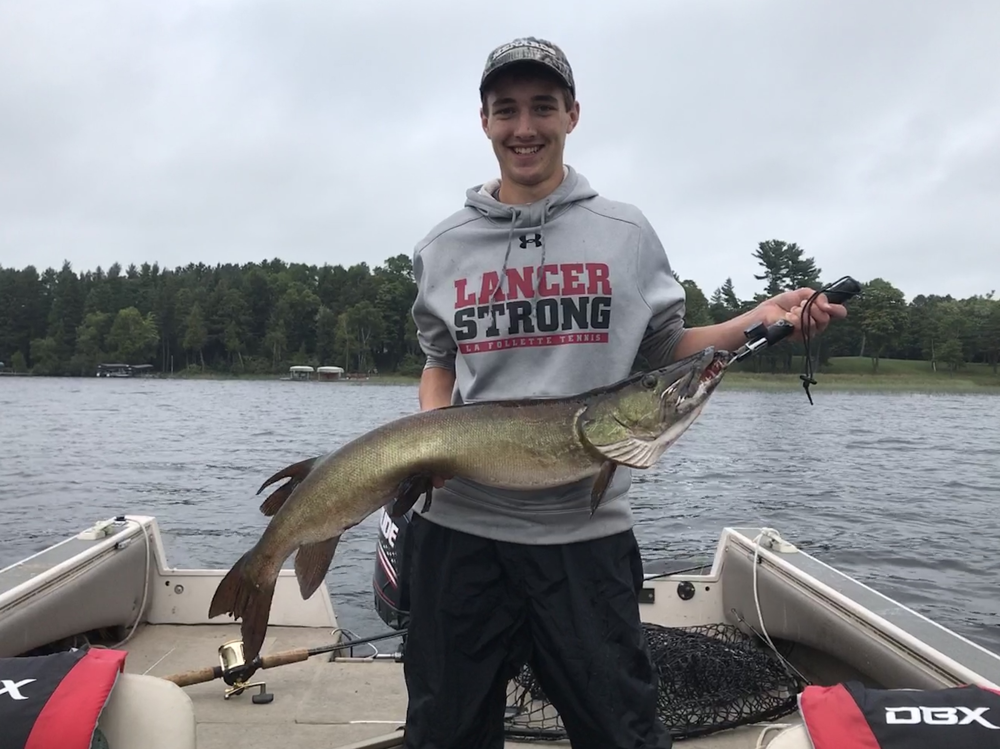

My fishing addiction began when I was little just catching panfish on a bobber and a worm up north at our cabin in Presque Ilse. But it has grown so much since then. I was introduced to Muskie fishing at around the age of 13 and I have been hooked ever since. And I have recently started getting more into Bass fishing and I joined the UW-Madison Fishing club/team. I like fishing so much so that my online username for most things is fisherdude.
This is my largest Muskie I've ever caught which measured in at 43.75 inches up on Birch Lake in Winchester, WI.

This is a Tiger Muskie that was caught one day after I caught the 43.75 inch Muskie and on the same lake. A Tiger Muskie is the sterile hybrid species of the Muskie and Northern Pike. They are almost always more gorgeous than either a Pike or Musky. This one was mostly orange-ish compared to the fully green Muskie.
This is a Smallmouth bass I caught on campus this year after getting more into bass fishing. Last year in my speech class I gave a persuasive speech on why more people should go fishing to relieve any kind of stress. At the time I didn't have any gear with me in the dorms but now I'm free to keep my stuff in my apartment and it's been great being able to go fishing almost whenever. That is whenever I don't have homework which is rarely. But still, I always try to find the time.